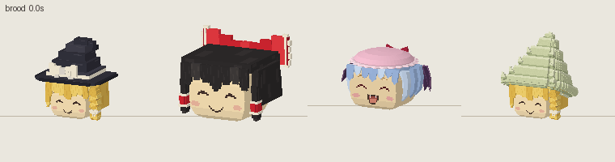
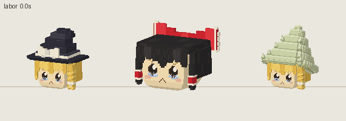
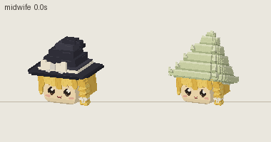
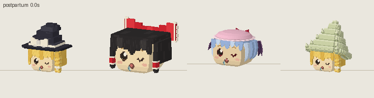
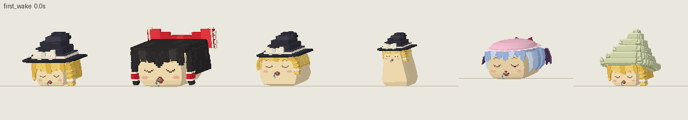
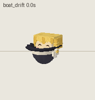
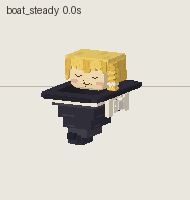
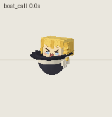
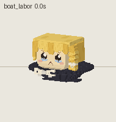
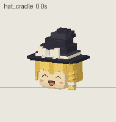

eat · 进食
むーしゃむーしゃ (L03 word form; chewing faces from the project's eating stages) — 触发：take_food、chew、swallow — 1.2 秒循环 — 从左到右：魔理沙、灵梦、家油魔理沙、豆形魔理沙、蕾米莉亚、螺壳魔理沙

交互预览：可选动作、旋转、缩放、调速。
每个动作只显示适用的形态；表情按动作的表情编排切换。离线渲染，使用游戏模型与动作修正资源；孕肚、茎和新生儿由游戏另行绘制，未包含。直接双击打开，不需要服务器。
むーしゃむーしゃ (L03 word form; chewing faces from the project's eating stages) — 触发：take_food、chew、swallow — 1.2 秒循环 — 从左到右：魔理沙、灵梦、家油魔理沙、豆形魔理沙、蕾米莉亚、螺壳魔理沙
しあわせー after a meal (L03 word form; the hop is project design) — 触发：meal_finish — 2.0 秒单次 — 从左到右：魔理沙、灵梦、家油魔理沙、豆形魔理沙、蕾米莉亚、螺壳魔理沙

drinking (rules) — 触发：drink — 1.6 秒循环 — 从左到右：魔理沙、灵梦、家油魔理沙、豆形魔理沙、蕾米莉亚、螺壳魔理沙

sleep (project stages sleepy, sleep, yawn) — 触发：sleep_enter、sleep — 4.0 秒循环 — 从左到右：魔理沙、灵梦、家油魔理沙、豆形魔理沙、蕾米莉亚、螺壳魔理沙

waking with a yawn (project stages) — 触发：wake — 1.6 秒单次 — 从左到右：魔理沙、灵梦、家油魔理沙、豆形魔理沙、蕾米莉亚、螺壳魔理沙

すーりすーり (E06, N2) — 触发：nuzzle — 0.8 秒循环 — 从左到右：魔理沙、灵梦、家油魔理沙、豆形魔理沙、蕾米莉亚、螺壳魔理沙

おうた (N3, W3) — 触发：sing — 2.0 秒循环 — 从左到右：魔理沙、灵梦、家油魔理沙、豆形魔理沙、蕾米莉亚、螺壳魔理沙

listening with a smile, adults keeping the beat (N3, W2) — 触发：listen_song、exercise_watch — 2.4 秒循环 — 从左到右：魔理沙、灵梦、家油魔理沙、豆形魔理沙、蕾米莉亚、螺壳魔理沙

sumo and bullying pushes (special-events, N1) — 触发：sumo_push、bully_peer — 1.2 秒循环 — 从左到右：魔理沙、灵梦、家油魔理沙、豆形魔理沙、蕾米莉亚、螺壳魔理沙

ゆっくりしていってね (L03, N1); Marisa as expedition captain, energetic (W, Marisa README) — 触发：reaction hello / peer / known_peer / caregiver / introduced / gentle — 1.4 秒单次 — 从左到右：魔理沙、灵梦、家油魔理沙、豆形魔理沙、蕾米莉亚、螺壳魔理沙

shivering and begging, fear (special-events, events) — 触发：reaction afraid / wounded — 0.5 秒循环 — 从左到右：魔理沙、灵梦、家油魔理沙、豆形魔理沙、蕾米莉亚、螺壳魔理沙

withdrawn after losing the accessory (TM02, personality-social) — 触发：reaction lost_accessory / family_died / lost_parent / cold、idle without accessory — 4.0 秒循环 — 从左到右：魔理沙、灵梦、家油魔理沙、豆形魔理沙、蕾米莉亚、螺壳魔理沙

searching for family, keeping watch (events, family_follow) — 触发：search_family、wait_child — 4.0 秒循环 — 从左到右：魔理沙、灵梦、家油魔理沙、豆形魔理沙、蕾米莉亚、螺壳魔理沙

a short wash makes it happy (rules, L01) — 触发：reaction washed、aquatic Marisa back ashore — 1.2 秒单次 — 从左到右：魔理沙、灵梦、家油魔理沙、豆形魔理沙、蕾米莉亚、螺壳魔理沙

a parent tends the brood at home (project rule, CORE_GAMEPLAY) — 触发：tend_brood — 4.0 秒循环 — 从左到右：魔理沙、灵梦、蕾米莉亚、螺壳魔理沙

straining, eyes squeezed, mouth open, one baby per push (CADあき, 無声あき, AVあき in viviparous-comics); phase-locked to the 48-tick contraction, rest at the 36-tick birth — 触发：labor (live delivery) — 2.4 秒循环 — 从左到右：魔理沙、灵梦、螺壳魔理沙

project design (the wiki is silent on helpers): the partner crouches beside the outlet, cheers with each contraction and nuzzles the newborn (すーりすーり, E06) — 触发：midwife (partner of a mother in live delivery, on land) — 2.4 秒循环 — 从左到右：魔理沙、灵梦、蕾米莉亚、螺壳魔理沙

the mother recovers after the births (viviparous-comics; joy soon meets hunger, TM09) — 触发：reaction birth after delivery — 3.0 秒单次 — 从左到右：魔理沙、灵梦、蕾米莉亚、螺壳魔理沙

unborn young sleep with closed eyes and wake on landing (Hakkei sprite, project rule) — 触发：reaction newborn / hatched — 2.0 秒单次 — 从左到右：魔理沙、灵梦、家油魔理沙、豆形魔理沙、蕾米莉亚、螺壳魔理沙

aquatic Marisa drifts curled up in her hat boat (special-events), bob and rock after the v1 aquatic clips — 触发：aquatic Marisa afloat — 4.0 秒循环 — 从左到右：水生魔理沙

the drifter tightens her body to steady the boat, water can still get in (events, lake-steady) — 触发：boat taking water, towed or hit, lake card — 1.5 秒循环 — 从左到右：水生魔理沙

a companion runs along the bank and calls; the drifter answers (special-events, events) — 触发：river encounter afloat — 2.0 秒循环 — 从左到右：水生魔理沙

project design: an aquatic mother keeps low in her hat while expecting (L25 keeps body and hat dry) — 触发：tend_brood afloat — 4.0 秒循环 — 从左到右：水生魔理沙
project design: a quieter strain, curled against the crown, then she turns to gather the baby into the hat (L06 the hat carries young) — 触发：labor afloat — 2.4 秒循环 — 从左到右：水生魔理沙

young carried in the hat (L06) — 触发：young aboard the mother's hat boat — 3.0 秒循环 — 从左到右：帽中幼体
